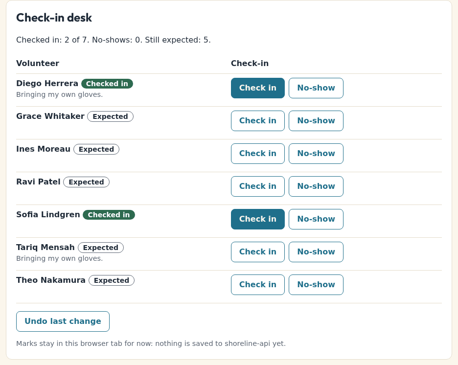

React + TypeScript · Part 2 · Session 13 of 26 · 3 hours
Session 13
Typed Context
The HQ learns who is looking. Then Checkpoint 2.
Today
Three hours, one lesson, one checkpoint
| 0:00 | Warm-up: Suspense and reducers |
| 0:10 | 5.2 Typed Context: model, demo, lab |
| 0:55 | 5.2 Project: the session and the provider |
| 1:25 | Break (10 min) |
| 1:35 | Checkpoint 2 (30 min) and debrief |
| 2:20 | 5.2 Project: the sign-in page and the header |
| 2:50 | Exit ticket, homework, what to bring next time |
LABS Lab files are in
labs/module-13. Work in starter/, never the solution.Warm-up · 10 minutes
Session 12, four questions
- Why does EventDetails go through
eventPromises.ts? - What does the ErrorBoundary catch that Suspense does not?
- A check-in for a row already checked in: what does the reducer return?
- What does
assertNeverin a default give you?
CODE Then: who has the check-in desk on /events/e17? Behind? lesson-18-start.
5.2
Typed Context
One broadcast, every radio tuned to it.
5.2 · The problem
Prop drilling
EventsPage→EventGroups→EventList→EventCard: Cancel?- Two of the three only hand the value on
Header→UserMenu: the same answer, another branch- Every middle component changes when the value changes shape
5.2 · Mental model
The beach radio
- A context is a channel; the provider is the transmitter
- It reaches only the part of the tree inside it
- Every
useContextis a radio: it hears the NEAREST transmitter - Nobody in between repeats the message
RULE Context for values many distant components need, that change rarely. Props for the rest.
5.2 · Live demo
Three parts: create, provide, read
type WeightUnit = 'kg' | 'lb' // The default ('kg') is what components get when no provider is above them const WeightUnitContext = createContext<WeightUnit>('kg') function BagWeight({ kg }: { kg: number }) { const unit = useContext(WeightUnitContext) return <strong>{unit === 'kg' ? `${kg} kg` : `${Math.round(kg * 2.2)} lb`}</strong> }
WHY No provider above? The default,
'kg'. DayTotal has no props at all.5.2 · Live demo
React 19 provides with the context itself
<WeightUnitContext value={unit}>
<button type="button" onClick={() => setUnit(unit === 'kg' ? 'lb' : 'kg')}>
Show {unit === 'kg' ? 'pounds' : 'kilograms'}
</button>
<DayTotal />
</WeightUnitContext>
<DayTotal />
WHY Measured: inside the provider "92 lb" after a click; the second DayTotal still "42 kg".
5.2 · The trap
A "harmless" default
import { createContext, useContext } from 'react' import type { AuthValue } from './auth/AuthContext.ts' // A "harmless" default so that nobody has to deal with undefined... const QuietAuthContext = createContext<AuthValue>({ session: null, isOrganizer: false, signIn: async () => {}, signOut: () => {}, })
WATCH It compiles and lints clean. Outside a provider, Sign in does nothing: no request, no error.
5.2 · Live demo
Make "no provider" a type
import { useContext } from 'react' import { AuthContext } from './auth/AuthContext.ts' export function OrganizerNote() { const { isOrganizer } = useContext(AuthContext) return isOrganizer ? <p>Drafts are listed below.</p> : null }
src/Scratch.tsx:5:11 - error TS2339: Property 'isOrganizer' does not exist on type 'AuthValue | undefined'. Found 1 error in src/Scratch.tsx:5
WHY "Might be undefined, and undefined has no isOrganizer."
5.2 · The pattern
Check once, throw loudly
shoreline-hq/src/auth/AuthContext.ts
// undefined is the value outside an AuthProvider: a mistake that useAuth() reports at once export const AuthContext = createContext<AuthValue | undefined>(undefined) /** The sign-in state. Only works inside <AuthProvider>. */ export function useAuth(): AuthValue { const auth = useContext(AuthContext) if (auth === undefined) { throw new Error('useAuth() must be used inside <AuthProvider>') } return auth }
RULE After the
if, auth is an AuthValue: every caller gets one.5.2 · Common mistake
Context, Hook and provider in one .tsx
⚠ react(only-export-components): Fast refresh only works when a file only exports components. Use a new file to share constants or functions between components. ⚠ react(only-export-components): Fast refresh only works when a file only exports components. Move your React context(s) to a separate file. Found 2 warnings and 0 errors.
FIX Fast Refresh: a .tsx exports components only.
AuthContext.ts + AuthProvider.tsx.5.2 · Where a sign-in lives
Four places to keep it
| React state | lost on every reload (links reload until 6.1) |
| sessionStorage | survives reloads · one tab · ends with the tab |
| localStorage | survives · every tab · kept for weeks |
| HttpOnly cookie | set by a server · scripts cannot read it |
SAFE Never put a token in code, a URL or a log.
5.2 · The API
Sign in, and a wrong password
HTTP/1.1 200 OK
content-type: application/json; charset=utf-8
{
"user": {
"id": "v01",
"name": "Maya Okafor",
"email": "maya.okafor@example.com",
"role": "organizer"
}
}
HTTP/1.1 401 Unauthorized
content-type: application/json; charset=utf-8
{
"error": "unauthorized",
"message": "Email or password is incorrect."
}
WHY The token is in the real answer too: the kit leaves it out, and so do you.
5.2 · Who asks
Same URL, different answers
GET /api/events?perPage=1 (guest) HTTP/1.1 200 OK x-total-count: 15 (organizer) HTTP/1.1 200 OK x-total-count: 17
GET /api/events/e17/signups
(a volunteer's token)
HTTP/1.1 403 Forbidden
content-type: application/json; charset=utf-8
{
"error": "forbidden",
"message": "Only organizers can do that."
}
WATCH Hiding a button is convenience. The API decides.
5.2 · Guided lab · 15 minutes
Two contexts, two decisions
labs/module-13/l5_2-typed-context/starternpm install, thennpm testandnpm run typecheck- Task 1: tides in m or ft: read in TideHeight, provide in TideBoard
- Task 2:
ShiftValue | undefinedand auseShift()that throws
MORE Predict: after Task 2, what do the Task 3 tests say?
5.2 · Guided lab
After Task 2: a sentence that names the fix
✓ Task 1: with no provider above it, a height uses the default unit ✓ Task 1: one click on the board switches every row to feet ✓ Task 2: outside a provider, useShift() fails loudly and says what to fix × Task 3: starting a shift reaches the banner in another branch of the tree × Task 3: ending the shift clears it everywhere Test Files 1 failed (1) Tests 2 failed | 3 passed (5) Error: useShift() must be used inside <ShiftProvider>
LAB Before Task 2 the shift tests failed quietly. Now they say what is missing: Task 3.
5.2 · Project · 30 minutes
Steps 1 and 2 before the break
client.ts: guards, the session, three requestsrequest(path, init: RequestInit = {})adds the token- Let the compiler find the two broken callers
AuthContext.ts,AuthProvider.tsx, the provider in App.tsx
PROJECT Done before the break:
npx tsc -b quiet with the provider in place.5.2 · Project, Step 1
The compiler finds the callers
src/api/client.ts:217:40 - error TS2345: Argument of type 'AbortSignal | undefined' is not assignable to parameter of type 'RequestInit | undefined'. Type 'AbortSignal' has no properties in common with type 'RequestInit'. src/api/client.ts:246:40 - error TS2345: Argument of type 'AbortSignal | undefined' is not assignable to parameter of type 'RequestInit | undefined'. Type 'AbortSignal' has no properties in common with type 'RequestInit'. Found 2 errors in the same file, starting at: src/api/client.ts:217
WHY A weak type: RequestInit's properties are all optional. Fix:
request(path, { signal }).5.2 · Project, Step 2
The only writer of the session
shoreline-hq/src/auth/AuthProvider.tsx
export function AuthProvider({ children }: AuthProviderProps) { // Start from the saved session, so a page reload keeps you signed in const [session, setSession] = useState<Session | null>(readSession) const isOrganizer = session?.user.role === 'organizer' // ... return <AuthContext value={{ session, isOrganizer, signIn, signOut }}>{children}</AuthContext> }
WHY
useState(readSession): the function itself, called once. Around everything in App.tsx.10
Break
Now: npm install in checkpoint-2/starter. Back at 1:35 for Checkpoint 2.
CP2
Checkpoint 2
Modules 4 and 5 so far. 30 minutes, alone.
Checkpoint 2 · 30 minutes
Three small pieces
useSite(apiUrl, siteId): a typed Hook, an effect, a LoadState (4.1, 4.2)tallyReducer: a discriminated union, assertNever (5.1)useTally()+TallyProvider: the reducer through a context (5.1, 5.2)
GO
labs/module-13/checkpoint-2/starter · done: Tests 8 passed (8) and a quiet typecheckCheckpoint 2 · How it is looked at
Five rows, 0 to 2 each
- Effects and fetching (Task 1)
- A typed custom Hook (Task 1)
- A reducer on a discriminated union (Task 2)
- Typed context (Task 3)
- Process: tests after each change, the first failure first
WHY Not a grade: it tells you what to revisit before Session 14.
Checkpoint 2 · Debrief
Delete one case, and assertNever speaks
src/tally.ts:34:26 - error TS2345: Argument of type '{ type: "reset"; }' is not assignable to parameter of type 'never'.
Found 1 error in src/tally.ts:34
WHY Nothing left in the default means
action is never. A leftover case has a name.5.2 · Project, Step 3 · 30 minutes
The sign-in page and the header

PROJECT Empty fields · a wrong password · Maya's: "Signed in" and the header changes.
5.2 · At home
Steps 4 to 6: who asks

HOME useApi:
[key, viewer, attempt]. Then the live roster on today's cleanup.5.2 · At home
The desk, now fed by the API

CHECK Delete src/data/ and src/Scratch.tsx when you are done.
Wrap-up · 4 minutes
Exit ticket
- Why
AuthValue | undefinedand not a default object? - Why are the context and the provider in two files?
- Hidden drafts and Cancel buttons: who really protects them?
WHY No notes. Workbook Exit Ticket box or a sticky note on the way out.
Before Session 14
Homework and bring list
- Finish the project (Steps 3 to 6); Exercises 1 and 2; the quiz; the journal
- Lab 5.2 Task 3 · Checkpoint 2 until 8 of 8 and a quiet typecheck
- Install React DevTools in your browser (the Profiler, Lesson 5.3)
- Bring internet for
npm install(the React Compiler)
NEXT Session 14: Rendering Performance and Component Patterns.